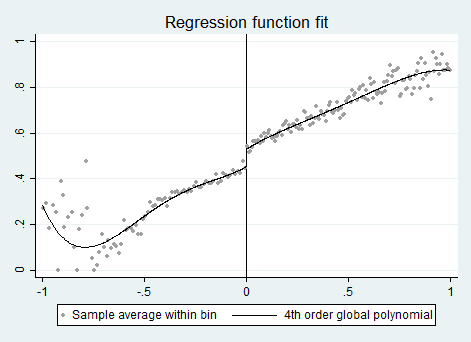
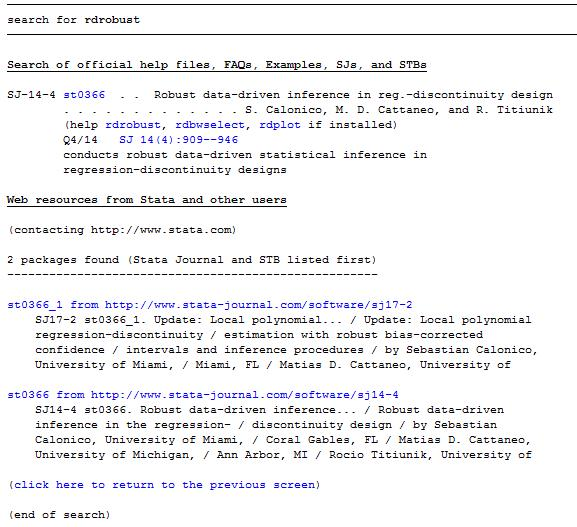
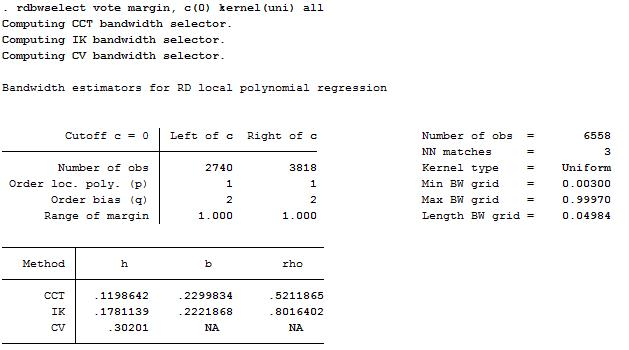
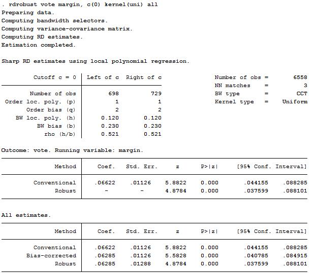
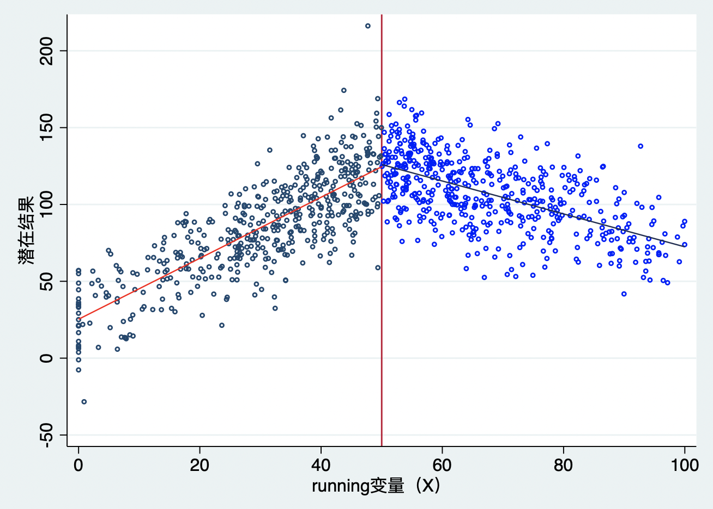
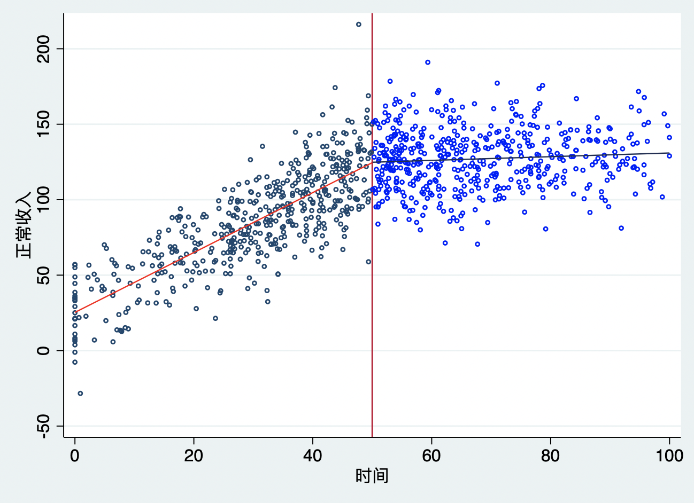
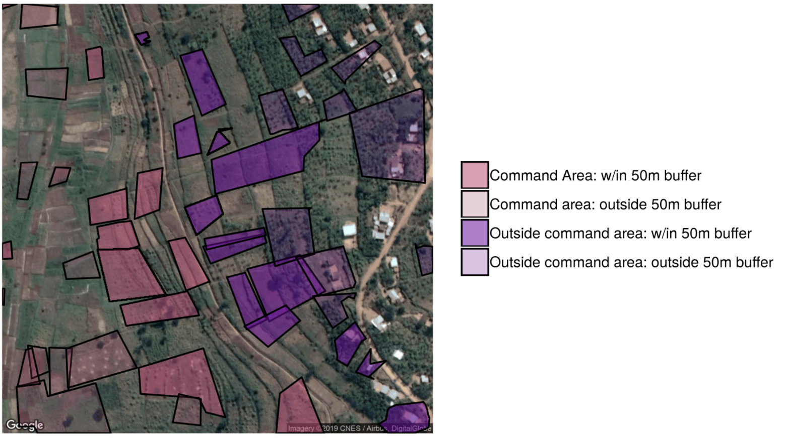

断点回归设计（RDD）
如果大家关注了微信公众号“香樟经济学术圈”的话，肯定记得2016年的时候，“满天都是RD”——各种RD经典文献解读，RD原理介绍。社科院付明卫老师写了一篇”断点回归（RD）的规定动作“的推文。里面写道：
订阅了各种经济学类公号的筒子们，最近有没有断点回归（RD）设计满天飞的感觉？作为同道中人，我感觉，被推送的RDD论文数量，在今年六七月份明显存在一个断点：从那以后，开始井喷！看着这些推文，多少人心中默念：“论文发表不轻松，要把断点为我用！”
RD确实是个好方法。它等于是在断点附近的局部随机试验。这一点赖以成立的前提条件，并不难以满足。此外，跟随机试验中全域（global）随机性可以被检验一样，RDD等于局部随机试验的假设，也可以通过观察前定变量的分布是否平衡来检验。从这个意义上讲，RD方法比IV、DiD更接近于随机试验。随机试验是因果识别的终极杀招，越接近随机试验的方法当然越好！
断点回归估计量
大家都知道湖北和湖南是由于分别在洞庭湖北边和南边而得名。我的家乡是湖北省会城市——英雄城市武汉市，2019年人均收入11.55万（2020年人均GDP由于疫情大幅下滑）。如果我从武汉市开车南下，来到温泉圣地——湖北咸宁市，你可能发现人均GDP下降了，例如，下降到湖北2020年人均GDP的7.4万元，如果我继续开车南下，来到洞庭湖边，发现人均收入还在下降。当我跨过洞庭湖进入湖南省，发现收入下降了15%（湖南2020年年的人均GDP为6.3万元）。但是我仅仅只是打开车门，跑到湖南去买了一杯“茶颜悦色”，年收入少了1.1万元左右。
这是怎么回事？肯定不是因为买了一杯“茶颜悦色”而导致了收入的大幅下降，那是因为什么呢？湖北和湖南最明显的差别肯定就是省界线。省界线明确区分了湖北和湖南。但是，我们可以肯定的是，两湖地区人均收入的下降，肯定不仅仅只是因为边界线的距离。有一点还是可以想象得到，如果没有省界线，湖北湖南人的收入可能还是有差异，但差异非常有可能缩小，因此，边界线的划分可能对两户地区的人均收入贡献较大。这就是断点回归的思想：比较边界线（断点）两侧的人均收入（结果变量），如果没有边界，人均收入可能非常接近。
自然界真的很神奇，非常的平滑：我从武汉回深圳，要么火车飞机4-5个小时，要么开车11个小时，我多么想“咻”得一下，瞬间传送到深圳，但是这是不可能，空间距离1200公里不多不少；参天大树总要经历播种、发芽、成长等一天天的成长过程，我们不能“拔苗助长”；财富积累也需要一步一步辛勤地劳动，暴发户是很少的；宇宙也非常的平滑，从地球到月球，到火星，都需要经历漫长的时间，除非遇到“黑洞”。因此，“罗马不是一天建成的”，精通计量，做出好的研究也是一样，需要持续数年，甚至数十载的静心积累与思考。
如果我们看到一个事物或现象出现“跳跃”、“尖峰”，或者其它奇怪的特征时，我们首先要质疑它们很可能不是自然的发展，而是人为的。那么，有趣的问题出现了，如果这些事物/现象仍然按照自然的方式发展（反事实），两者会有什么差异呢？这就是在探索人为干预的效应，这种人为导致的“跳跃”也是断点回归设计的核心内容。
在自然实验中，还可能出现一种情形：个体接受处理完全或部分依赖于某个可观测变量W是否超过某一阈值（门槛）。例如，一个学生是否要参加“短学期”依赖于他期末平均绩点（GPA）是否在规定阈值以下。根据前面的理想实验中平均处理效应的idea，估计参加“短学期”的效应也是要比较那些GPA在阈值以下（参加短学期）的学生成绩与那些GPA在阈值以上（不参加短学期）的学生成绩。这个有阈值限制的可观测变量W称为参考变量。
另外一个例子是是Lee(2008,JoE)对美国各地区众议员选举中在位党在竞选中是否具有优势的分析。美国两大党派在选举中获得的选票份额超过对手时，该党就是在位党。Lee以民主党选票份额与共和党选票份额之差作为参考变量W，间断点为0，只要上次选举中参考变量大于0，即意味着民主党在位，否则共和党在位。图5展示了数据集的散点图，如果\(W>0\)，民主党在位。

图5显示了，下一次的选举得票份额是现在两党得票之差W的函数。如果阈值\(w_0\)的唯一作用只是识别在位党派，那么，下一次选举得票份额在阈值处的“跳跃”就是竞选中在位的效应估计值。
也就是说，更一般化的分组规制是
\[\begin{equation} D_i= \left\{ \begin{aligned} 1~~~~if ~~x_i\geq{w_0} \\ 0~~~~if ~~x_i\le{w_0} \\ \end{aligned} \right. \end{equation}\]
假设在选举前，各党派的得票份额的结果\(y_i\)与\(x_i\)之间存在如下线性关系：
\[\begin{equation} y_i=\alpha+\beta{x_i}+\epsilon_i \end{equation}\]
我们从图5可以看出，在\(x_i=w_0\)处，\(y_i\)与\(x_i\)的线性关系存在一个向上跳跃（jump）的断点。但是，得票率(%)为49.8、49.9、50、50.1、50.2等，可以认为党派在各个方面没有系统差异，因此，这个跳跃发生的唯一原因只可能是\(D_i\)的处理效应，也就是在位党的优势。
图5也是一个分段函数，因此，我们可以引入虚拟变量来表示具有不同截距的分段函数。因此，我们可以将（11）式重新写成：
\[\begin{equation} y_i=\alpha+\beta{(x_i-w_0)}+\delta{D_i}+\gamma{(x_i-w_0)D_i}+\epsilon_i \end{equation}\]
引入交互项\((x_i-w_0)D_i\)是为了允许在断点两侧的回归线斜率不同。对方程（12）进行OLS回归，得到的\(\tilde{\delta}\)就是断点回归估计量，也称为局部平均处理效应（LATE）。
在估计断点回归时，要特别注意两点：
1、方程（12）中包含了交互项。如果断点两侧的回归线斜率相同，则可不包含交互项。但在实践中，一般断点两侧斜率会不同，因此，如果不包含交互项，则可能导致断点右（左）侧的观测值影响对左（右）侧截距的估计，从而引起偏误；
2、在有交互项的情形下，如果方程中没有\((x_i-w_0)\),而是使用的\(x_i\)，那么，虽然\(\tilde{\delta}\)还是断点两侧的距离之差，但是并不等于这两条回归线在\((x_i=w_0)\)处跳跃的距离。
由于在参考变量的阈值处，结果变量的跳跃或断点，那些探讨在某一阈值处接受处理的概率的非连续性的研究被称为断点回归(RD)设计。它又分为精准断点回归（sharp RD）和模糊断点回归（fuzzy RD）。SRD在断点\(x_i=w_0\)处，个体接受处理的概率从0跳跃到1，而FRD在断点\(x_i=w_0\)处，我们只知道个体接受处理的概率从a跳跃到b，而\(0\le{a}\le{b}\le{1}\)。
精准断点回归
在Sharp RDD中，接受处理完全由参考变量W是否超过某一阈值决定：当\(W>=0\)时，民主党是在位党，当\(W<0\)时，共和党是在位党；即用D表示民主党是否在位，当\(W>=0\)时，\(D_i=1\)，当\(W<0\) 时，\(D_i=0\)。在这种情形下，下一次获得选票份额Y在\(W=0\)处的跳跃就等于\(W=0\)时子样本的处理效应。
由此，我们可以看到，上述例子是一个精准断点回归。那么，我们是否还可以利用（12）式进行OLS估计呢？可以是可以，但是这存在两个问题：
1、可能存在遗漏变量偏误，例如如果回归中还有高次项\((x_i-w_0)^2\)；
2、断点回归可以看作是“局部随机实验”，因此从原理上看，我们应该只是用断点附近的观测值样本，但我们在实践中却是是用全部样本进行回归。
为了解决上述问题，我们可以引入高次项，并限定x的范围\(w_0-h\le{x_i}\le{w_0+h}\)。这里的h就是最优带宽。回归方程变为
\[\begin{equation} y_i=\alpha+\beta_1(x_i-w_0)+\beta_2(x_i-w_0)^2+\delta_{D_i}+\gamma_1(x_i-w_0)D_i+\gamma_2(x_i-w_0)^2D_i+\epsilon_i,~~w_0-h\le{x_i}\le{w_0+h} \end{equation}\]
可是，现在我们不能确定最优带宽h，还是不能估计（13）式呀。在确定h时，一般是采用非参数回归来最小化均方误差（MSE）。直观来说，h越小，偏差越小，但是估计方差会变大；反之亦然。
针对断点回归，我们一般使用两种核回归（kernel regression）：三角核（triangle kernel）与矩形核（rectangle kernel）。
关于协变量问题
1、我们可以在（13）式中加入影响Y的协变量。虽然断点回归是局部随机实验，包不包括协变量并不影响断点回归估计量的一致性，但是加入协变量的好处为：加入协变量可以解释被解释变量Y，那么，就可以减低方差。使得估计更准确。但坏处是：如果加入的协变量是内生变量，与误差项相关，那么就会影响估计量。
2、实际上，断点回归有个隐含假设：协变量在断点处不存在跳跃，是连续的。如果协变量在断点处也存在跳跃，那么，我们就不能把\(\tilde{\delta}\)全部归于处理效应。因此，在实践中，我们要现将所有的协变量作为被解释变量，进行断点回归，考察其分布是否在断点处存在跳跃。
此外，我们还应该注意“内生分组”问题。如果个体事先知道分组规则，并可通过自身行为来完全控制分组变量，那么，就可以自行选择进入处理组还是控制组，这就导致了随机分组失败，从而断点回归失灵。
小贴士:在实践中，我们建议同时汇报出以下情形，以确保结果稳健：
1、分别汇报三角核与矩形核的回归结果；
2、分别汇报使用不同带宽的结果；
3、分别汇报包含协变量与不包含协变量的结果；
4、进行模型设定检验时，包括检验分组变量与协变量的条件密度在断点处是否存在跳跃。
模糊断点回归
在Fuzzy RDD中，参考变量超过阈值会影响到是否接受处理，但这不是决定处理的唯一影响因素。例如，假设有些GPA在阈值以下的学生并没有参加短学期，而有些GPA超过阈值的学生又参加了短学期。如果临界值规则是一个决定treated非常复杂的过程的一部分，那么上述情况就可能会出现。在模糊断点回归中，\(X_i\)一般与误差项\(u_i\)相关。
断点回归的规定动作
下面的内容结合了社科院付明卫老师2016年在“香樟经济学术圈”的推文“断点回归的规定动作”，并进行一些扩展：
第1步
检查配置变量（assignment variable，又叫running variable、forcing variable）是否被操纵。画出配置变量的分布图。最直接的方法，是使用一定数量的箱体（bin），画出配置变量的历史直方图（histogrm）。为了观察出分布的总体形状，箱体的宽度要尽量小。频数（frequencies）在箱体间的跳跃式变化，能就断点处的跳跃是否正常给我们一些启发。从这个角度来说，最好利用核密度估计做出一个光滑的函数曲线。McCrary（2008）为判断密度函数是否存在断点提供了一个正规的检验（命令是DCdensity，介绍见陈强编著的《高级计量经济学及Stata应用》（第二版）第569页）。最近，Cattaneo et al. (2018) 提出另一种估计量，这种方法有非常多的优势：并不需要预先计划，它主要基于核密度函数，而且很容易在Cattaneo他们开发的RD程序包中实现。
第2步
挑选出一定数目的箱体，求因变量在每个箱体内的均值，画出均值对箱体中间点的散点图。一定要画每个箱体平均值的图。如果直接画原始数据的散点图，那么噪音太大，看不出潜在函数的形状。不要画非参数估计的连续统，因为这个方法自然地倾向于给出存在断点的印象，尽管总体中本来不存在这样的断点。需要报告由交叉验证法（Cross-validation, CV）挑选的带宽。一般而言，为了看出潜在函数的形状，不要挑选过大的带宽。但是，带宽太小也会导致看不出潜在函数的形状。比较因变量均值在断点两边的两个箱体间的变化，可以预判处理效应的大小。如果图形中都看不出因变量在断点处有跳跃，那么回归方程也不可能得到显著的结果。
第3步
将Y在每个箱体内的均值作为因变量，用处理变量、配置变量的多次项作为自变量，在断点两边分别跑回归，得到因变量的拟合值。将这些拟合值画在第2步的图中，并用光滑的曲线连接起来。在推文人读过的RD论文中，多次项一般都使用1到4次项，但没有论文解释为什么只用到4次项。
第4步
检验前定变量在断点处是否跳跃。此步和第1步是RD方法的适用性检验。此步的检验包括两项内容：1. 像前三步那样画前定变量的图。 无论参数还是非参数，RD研究都要大把的图！这些图在正式发表的论文中都必不可少！原文中说了这么句话：用RD做的论文，如果缺乏相关的图，十有八九是因为图显示的结果不好，作者故意不报告。2. 将前定变量作为因变量，将常数项、处理变量、配置变量多次项、处理变量和配置变量多次项的交互项作为自变量，跑回归。一个前定变量有一个回归，看所有回归中处理变量的系数估计是否都为0。检验这种跨方程的假设，需要用似不相关回归（Seemingly Unrelated Regression, SUR）（命令是sureg，用法见陈强编著的《高级计量经济学及Stata应用》（第二版）第471-474页）。在推文人读过的RD实证论文中（尤其是AER2015-2016年所有用RD做的论文中），均没用SUR，只是简单的看每个回归中处理变量的系数估计均为0。
第5步
检验结果对不同带宽的稳健性。尝试的其它带宽，一般是最优带宽的一半和两倍。Lee和Lemieux（2010）介绍了两种确定最优带宽的方法：拇指规则法（rule of thumb）和交叉验证法（CV）。现在，江湖上有另外两种比较受关注的方法：IK法和CCT法。IK法以Imbens和Kalyanaraman两个人命名，对应着论文Imbens和Kalyanaraman（2012）。这篇论文发表在Review of Economic Studies，Lee和Lemieux（2010）文中提到过此文2009年的NBER工作论文版。CCT法以Calonico、Cattaneo和Titiunik三个人命名，对应着论文Calonico、Cattaneo和Titiunik（2014a）。用非参数法做断点回归估计时的stata命令rd，就是用IK发确定最优带宽。stata命令rdrobust、rdbwselect，提供CV、IK、CCT三种不同的最优带宽计算方法选项。然而，尽管Calonico、Cattaneo和Titiunik（2014a）2014年发表在牛刊Econometrica上，AER2015-2016年上的文章没有买它的账。AER2015-2016年的6篇相关文章中，仅有1篇提到过CCT，其他5篇就像不知道Calonico、Cattaneo和Titiunik（2014a）这篇文章。我甚为不解！难道是因为CCT非牛人？
强烈建议大家都画出不同带宽与带有置信区间的LATE的图，即x轴是带宽，y轴是估计的带有置信区间的局部平均处理效应（LATE）。
第6步
非线性函数的稳健性检验：非参数和参数方法（不同多项式次数）的稳健性。早期的RD文献一般都会挑选多项式的最优次数，可用赤池信息准则（Akaike’s Information Criterion，AIC）。在我们尝试的包含配置变量1次方、2次方、⋯⋯N次方的众多方程中，AIC取值最小的那个就是我们想要的。实操时，试到多少次为好？原文中至少试到了6次。我们做研究时需要试到10次还是100次呢？Gelman和Imbens（2019）解除了我们的这个烦恼。根据Lee和Lemieux（2010），配置变量的次数要试到N次。但是，Gelman和Imbens（2019）的论文说，试到N次的做法要不得，最多只能搞到2 次。至于原因，他们讲了三条，感兴趣的请参考原文。因为如果我们将参数法（多项式拟合法）应用于整个样本，那么，远离断点的观测值会获得更高的权重。因此，AER2015-2016年间所有用RD做的论文（共6篇）里，5篇都只用1次或2次。最近几年大家都开始更多关注非参数方法来拟合非线性数据产生过程。
第7步
检验结果对加入前定变量的稳健性。如上所述，如果不能操控配置变量的假设成立，那么无论前定变量与因变量的相关性有多高，模型中加入前定变量都不应该影响处理效应的估计结果。如果加入前定变量导致处理效应的估计结果变化较大，那么配置变量可能存在排序现象，前定变量在断点处也很可能存在跳跃。实操时在确定多项式的次数后，直接在回归方程中加入前定变量。如果这导致处理效应估计值大幅变化或者导致标准误大幅增加，那么可能意味着函数中多项式的次数不正确。另外一个检验是残差化，看相同次数的多项式模型对残差的拟合好不好。
第8步
用“假定结果变量”来做安慰剂检验。断点回归基于连续性假设，也就是断点处唯一发生变化的是处理状态。这就意味着偏离处理状态的协变量在断点处是连续的。但是，实践中，几乎可能检验所有的可观测和不可观测变量是否在断点处发生“跳跃”。这个时候，我们就应该利用假定的结果变量来显示一些重要的观测变量在断点处确实没有“跳跃”。我们仅仅只需要用这些观测变量替换真实结果变量即可，即假定的结果变量来作为安慰剂检验。经典的安慰剂结果包括：滞后的因变量、地理单元、一些时间变量（例如，观测时的年月）、年龄、性别、收入等等。这些重要的协变量都不应在断点处显示出明显的“跳跃”。需要特别强调的是，可能我们需要做的 安慰剂结果变量非常多，这个时候难免会有一些安慰剂结果会发现显著的处理效应，我们需要记住，它们对于RD研究设计的效应估计来说并不是致命的问题。这个时候我们只需要加入更多的能使得安慰剂检验通过的变量作为控制变量即可。如果我们使用局部回归（local regression），加控制变量就是一种投机取巧的方法，因为我们还可以使用Calonico, Sebastian, Matias D Cattaneo, Max H Farrell, and Rocio Titiunik（2019，RES）提出的一些方法来解决这些问题，且都可以在rd类程序包中实现。
第9步
用“假定的断点”来做安慰剂检验。我们需要在真实断点两边都人为的假定一些断点，然后检验结果变量在这些假定的断点处是否存在“跳跃”。根据连续性假设，要使得估计效应更可信，在假定断点处，结果变量不会有明显的跳跃。此外，Imbens and Lemieux (2008)建议使用处理组和控制组配置变量的中位数来进行安慰剂检验。在中位数附近跑回归可以提高统计量，并更可能得到效应。因为我们预期不存在效应，因此，统计量提高可以使得该安慰剂检验更加的谨慎。
第10步
需要特别关注效应的异质性。在其他的研究设计中，处理异质性效应只需要将所有的协变量都加入回归，并将这些协变量与处理变量进行交互。但是，在RD中，这个逻辑不成立。尤其是即使我们仅仅只使用配置变量断点附近的观测值来进行估计，当存在模型误设时，断点回归仍然会存在严重的过度拒绝问题。如果继续划分样本，在RD中必然会导致小样本问题，这就与RD要求的大规模数据样本要求相违背了。最近几年发表的文献开始使用倾向得分加权（后文还要专门讲这个方法）来解决上述问题。Practically, this means weighting observations of one subgroup inversely to the propensity to belong to this group on the basis of a set of covariates. Doing so generates two groups who differ in the moderator but are similar in their weighted propensity to belong to each of the subgroups, based on observables (Gerardino et al., 2017). Once these weights are applied, each subgroup-specific analysis can then be implemented. See more detailed description of the design in Gerardino et al. (2017) and Hsu and Shen (2019), who also offer a Stata 程序包rddsga to conduct subgroup analysis within the RD setup (Carril et al., 2017).
stata操作
下面，我们使用Lee(2008)的数据来演示一下断点回归的stata操作。这个数据集中包括两个变量：vote表示民主党的选票份额；margin表示民主党在上次竞选中获得的选票与共和党选票份额之差。因此，margin就是参考变量，如果margin大于0，民主党就是在位党，这是一个SRD。我们感兴趣的问题是，在位党是否会获得优势。我们将样本限制在\(margin\pm0.5\)之间，样本共有4900个。
第一步，下载安装断点回归命令。Calonico et al.（2014）提供了一个专门进行断点回归分析的程序包rdrobust，里面包含三个命令：rdplot——断点回归图形；rdbwselect——选择最优带宽；rdrobust——估计断点回归估计量。
findit rdrobust （查找、安装rd程序）
stata会出来下列界面

点击“st0366_1 from http://www.stata-journal.com/software/sj17-2”，进入页面再点击“click here to install”进行安装。
第二步，画断点图。输入
rdplot vote margin, c(0) nbins(50)（画断点图）
第三步，选择最优带宽。输入
rdbwselect vote margin, c(0) kernel(uni) all（选择最优带宽）
上述命令中，kernel()是设置核估计方法。此处选择的是矩形核。得到的结果是

第四步，估计断点回归估计量。输入：
rdrobust vote margin, c(0) kernel(uni) all（估计断点回归估计量）

以上四步就是断点回归的基本操作步骤。
下面，我们来详细介绍一下上述三个rd命令的基本语法格式：
rdplot depvar indepvar [if] [in][,c(#) p(#) kernel(#) weights() h(# #)
nbins(# #) binselect() scale(# #) ci() shade generate(id_var meanx_var meany_var cil_var cir_var)
graph_options(gphopts) hide]
两个必选项：
1、depvar是结果变量、原因变量或其他协变量；
2、indepvar是参考变量；
中括号里的全部为可选命令：
3、c(#)用于设置断点的位置；
4、p(#)设定多项式的阶数；
5、kernel(#)设定核估计类型，有三种：三角核trianglar、Epanechnikov核epanechnikov、矩形核uniform；
6、h(# #)设置断点左右的带宽；
7、nbins(# #)设定划分的区间数；
8、binselect()设定带宽的选择方法；
9、ci() shade画出每个区间拟合点的置信区间，shade表示置信区间用阴影表示。
rdbwselect depvar indepvar [if] [in][,c(#) p(#) q(#) deriv(#) fuzzy(fuzzyvar[sharpbw])
covs(#) kernel(#) bwselect() scaleregul(#) vce(vcetype[vceopt1 vceopt2]) all]
最优带宽选择命令中与画图命令中有很多相同命令。需要注意的是：
1、q(#)为偏差修正的多项式阶数；
2、deriv(#)可以用于估计弯折回归（RKD），0为断点回归，1为弯折回归；
3、fuzzy(fuzzy-var[sharpbw])用于模糊断点回归或模糊弯折回归，fuzzyvar是原因变量，sharpbw表示使用结果变量的最优带宽；
4、covs(#)引入协变量；
5、bwselect()最优带宽的估计方法。
rdrobust depvar runvar [if] [in][,c(#) p(#) q(#) deriv(#) fuzzy(fuzzyvar[sharpbw])
covs(#) kernel(#) h(# #) b(# #) rho(#) bwselect() scaleregul(#)
scalepar(#) vce(vcetype[vceopt1 vceopt2]) level(#) all]
估计命令与带宽估计命令相似。
RD的新进展
Kink回归设计
好了，我们已经知道经典的断点回归设计怎么做了。断点回归确实非常的受欢迎，例如，David Evans的blog和Christine Cai整理的最新RD文献。记住：数据中一定要在running变量的某个阈值附近存在明显的“跳跃”，也就是说，结果变量在断点左右（或者上下）存在“跳跃”。但是，从理论上来说，断点回归设计应该可以让我们来分析结果变量在断点附近的变化（Nick Huntington-Klein，2022），这就意味着不仅仅是“跳跃”这种变化。那么，还有什么变化呢？
想象一下，在断点附近，结果变量并没有显著的差异，也就是，断点附近的结果变量观测值仍然连接在一起，但是我们可以明显观察到断点两边的斜率发生了变化，如图10.6所示。断点处的处理并没有使得结果变量本身发生”跳跃“，而是改变了结果变量和running变量X之前的关系强度，即斜率发生了变化。

这个变化还可以用断点回归设计来识别吗？首先，这个时候肯定不能使用上述经典断点回归设计了，因为它们不满足数据“跳跃”要求。但是,不要担心，断点肯定还可以使用，只是需要一定的修正。目前，主要存在两种类型的弯折情形：
第一，处理改变了潜在结果与X之间的关系。例如，当我们在用断点回归设计研究“绿水青山就是金山银山”主题时，我们用时间作为running变量，用植树造林量作为结果变量。那么，在2002年中国全面启动退耕还林工程，鼓励更多的植树造林。但是，我们并没有在2002或者2003之后看到树林数量明显的、”跳跃性“的变化，而是看到了树林面积增长速度比2002年之前更快了（也就是，斜率变大了），如图10.6就是这种情形。
第二，处理本身发生了弯折（Kink）。许多政府政策都具有这种特征。例如，经典的Card et al（2015）所做的经典kink回归。作者研究了奥地利的失业救济政策对失业期长度的影响。奥地利的失业救济分了不同档次，从正常收入的55%到最高额度。因此，正常收入是running变量，它会影响失业救济金直到一个阈值，在这一点上正常收入对失业保险金的影响变为零。因为当失业保险金大幅提升时，失业的人肯定不太愿意去找新工作，这样失业的持续期就会拉长，因此，我们可以预期正常收入与失业持续期存在一个正向的关系，直到断点处，然后在断点时间后又趋于平缓，如图10.7所示。

下面，我们来看看。
多断点回归设计
在经典RD研究设计中，决定处理与否的断点对于所有组群都是已知的，并且完全相同。例如，当学生的成绩/绩点高于一个阈值时，她就可以获得奖学金，这个绩点的门槛对于所有学生都是已知的，一样的。但是，在实现中，许多情形的断点可能在组群之间是不同的。例如，在多候选人的选举中，得票率是配置变量，选区是组群，处理就是在多数规则下是否赢得选举。Cattaneo, M. D., Keele, L., Titiunik, R., & Vazquez-Bare, G. (2016)将这一类的RD设计称为多断点回归设计。或者只有一个断点，但是，断点随着时间变化。因此，断点可以随着组群、地区或者时间变化而变化。
最常用的方法就是中心化数据，并假设无差异。
下面，用三个例子来演示多断点回归：选举、人口与教育。案例和数据均来自于Cattaneo, M. D., Keele, L., Titiunik, R., & Vazquez-Bare, G. (2016，The Journal of Politics)
巴西执政党的选举优势
在城市市长选举中，巴西社会民主党是执政党，其在市长选举中是否会获得优势呢？在这场选举中，大约有三分之一的市长竞选中两个最高得票的候选人（党派）联合起来得票率也没有查过70%。表10.1呈现了巴西社会民主党最强竞争对手不同水平得票率的频率。由于得票率是连续变量，我们将其划分成四个区间：（0,35）,(35,40),（40,45）,(45,50)。对应于每个区间，表10.1中还呈现了政党赢得选举和失败的得票率。如果是一个两党竞选环境，已知一个政党的最强竞争对手的得票份额就等同于知道了该政党是否可以赢得选举。但是，在多党选举环境下，上述等价就不存在了。例如，巴西社会民主党的获得少于64%的选票，而其最强竞争对手得票率至少为35%。
巴西联邦转移支付对政治腐败的影响
学校基础设施修缮对教育结果的效应
排序断点回归（Count RD）设计
类似于Kink的情形，如果结果变量在断点左右确实存在明显差异，但由于观测值在断点附近的差异又不太明显；与Kink不同的是，断点附近的差异不明显是由于结果变量的观测值都堆叠在断点附近而引起。当观测点在断点附近堆叠使得断点左右的差异消失时，在一些条件下，我们可以舍弃堆叠的观测值，仅仅考虑堆叠上下的观测值。想象一下，如果断点的右侧发生观测值排序，但又没有远离断点，那么，我们应该仅关注那些对排序不敏感的观测值。换言之，我们在断点附近挖一个洞，且断点左右对称，那么，我们仅仅比较洞外的结果。因为Alan I. Barreca, Jason M. Lindo, Glen R. Waddell（2016）指出，组群在断点附近堆叠并非随机的，因此，我们在使用经典RD时要特别小心。为此，Alan I. Barreca, Melanie Guldi, Jason M. Lindo, Glen R. Waddell（2011，QJE）提出了一种排序断点回归来解决上述堆叠问题。
2020年AEA继续教育课程中也讲到了这个方法，其它一些概述可以参见Jason Lindo的twitter。
空间断点回归
概述
例子2：卢旺达的灌溉系统是依靠自然重力的，水会通过水渠经过灌溉田地。这就意味着（1）田地是否能浇灌到水存在一个断点：水渠下方的田地可以得到浇灌，而地势高于水渠的田地则无法获得水；（2）这要求水渠的海拔高度为近似常数：在灌溉区内，相对海拔不能认为操控，因此，我们可以认为水渠两侧的田地是“随机分布”的。如图9.8所示。

上述两个例子都显示了空间断点回归设计。湖南湖北的断点是通过洞庭湖分割，在湖南湖北越靠近省界的区域，湖南话湖北话存在差异，我们可以假设人均收入差异都是由于湖南话和湖北话导致的。而图9.8中，水渠的断点是由于坡度区分了两块：粉色区域和紫色区域。粉色区域高度低于水渠，所以可以得到灌溉，而紫色区域由于在水渠上方，所以不能获得灌溉。实践中，我们关注于水渠两侧较近的距离内（例如，50米以内的灌溉区域）。越接近的灌溉区，其唯一的差异就是是否可以获得灌溉水，因此，我们可以假设农业产出的任何差异都只是由于是否获得灌溉导致的。这就是空间断点回归。
尽管空间断点回归与断点回归同根同源，但是在使用它们时，仍要注意它们之间的一些关键性差异，详情参见Keele and Titiunik(2015)和Matias D. Cattaneo, Nicolás Idrobo and Rocío Titiunik（2020）。Florence Kondylis and John Loeser（2019）对上述文献做了非常好的概述：
影响估计的差异
多重断点：与经典RDD的单一断点不同，空间RD的经度和纬度都是断点。
离散个体：在空间RD中，数据在非常粗糙层面才可用，例如，研究者经常使用中国县级层面的数据来评估政策效应。而经典RDD要求大规模的观测样本，断点附近也有非常多的个体。
影响效应理解的差异
配套政策：对于经典RDD来说，通常在断点处只有单一政策变化。但是，在空间RD中，地理边界之间通常有多个政策变化。这个时候，经典文献中常常会仔细地讨论制度、环境等背景知识，或者考察断点一边的某种政策变化时断点左右的变化趋势。
地理溢出：在经典RDD中，断点附近的个体相对于总体来说数量较少，因此，个体在断点左右移动对断点附近的其它个体的影响非常小。但是在空间RD中，只在某一地区（地理上很很难确定精确的实施边界）实施的政策肯定会有非常重要的溢出效应，这会让估计结果很难解释——然后溢出会改变估计效应的含义，但它并不会改变估计量是政策的一种相对效应（相对于邻里之间的或正或负向溢出）。
操控：在经典RD中，我们总要时刻注意个体可能会选择他们自己的得分来让自己受到政策的处理，因此，这种操控就会带来偏误，因为这意味着同一个体在处理前后可能非常不同。在空间RD中，虽然地理位置不能移动，但地理上的人或者物等还是可以移动的。因此，也要特别小心。
影响推断的差异。在空间RD中，结果和处理通常都显示出空间相关。因此，很多学者都用Conley标准误或者近似聚类稳健标准误来矫正空间相关问题，更多信息参见David McKenzie的博文“When should you cluster standard errors? New wisdom from the econometrics oracle”。
那么，我们实际应用中，可以采用的因果效应识别工具有哪些呢？
匹配
将每个观测值与其最近的空间相邻者进行匹配，然后用观测值与邻居之间的结果差异对eligibility差异进行回归。注意，由于eligibility仅仅在断点（阈值）处变化，因此，其差异不同于0只会发生在观测值最近邻居处在边界的另一侧时。
匹配法在标准匹配假设下（见下一章匹配法的内容）都是有效的，即边界两边的邻近观测结果是相同的，边界处的eligibilty无差异。
经典断点回归
用上述经典断点回归。仅仅只需要让到边界的距离作为配置/驱动变量（有资格的观测个体为正，没有资格的观测者为负），然后用结果变量对资格变量进行回归，控制边界的距离和边界距离与资格变量的交互项；
直观上来说，这等价于将边界分隔出的每个小块都进行RDD，然后平均这些RDD估计量。因此，在每个分隔区，该方法在标准的RDD假设下都有效。
混合方法(空间固定效应)
对于每一个观测单元，计算平均结果，平均资格，以及最近k个邻近单元的所有控制变量的平均值，或者一些固定距离（k是选择的合理的距离半径）所有观测单元的平均；
然后，用每个观测结果（资格变量和控制变量）减去平均值；这个过程就是“空间固定效应”，从而得到空间去均值结果（资格变量）；
最后，用空间去均值结果变量对空间取均值资格变量进行回归，控制那些空间去均值的边界距离，以及距离与资格变量的交互项；
如果仅仅只选择一个邻近单元，而边界距离没有控制，那么，这种方法就变成了一对一匹配。此外，如果我们选择所有的邻居，这就等价于经典的RDD。因此，空间固定效应方法在匹配或者RDD的识别假设成立时才有效。
需要特别注意的事项
栅格数据：当我们在地里边界上有许多观测值时，使用空间断点回归设计就比较合适。
安慰剂检验：对于协变量和结果变量的标准的balance检验（不应该被政策所影响）对于空间断点回归设计的有效性检验非常重要。
熟知政策背景：当许多政策打包一起，或者存在溢出时，空间断点估计量的理解/解释就要格外小心谨慎。
L J Keele and R Titiumik(2014,PA)的地理边界断点回归
R M Gonzalez(2021,AEJ:AE)的阿富汗手机使用与选举欺诈
discussion of spatial RD designs and the different issues that may arise with them, nor again on power calculations and thinking through what size samples are needed for RD to work.
DID-Kink
参见Rafael Ribas的主页，或者看看他的Slides。
连续型处理变量的RDD
Dong, Lee, and Gou (2022)提出了一种新的断点回归方法可以应用于连续型处理变量的效应评估。Butts开发了一个R语言包来实施连续型处理变量的RDD。
Matias D. Cattaneo and Rocio Titiunik（2022, Annual Review of Economics）最近为ARE写了一篇断点回归进展的文献综述，非常值得一看。总之，如果大家对断点回归感兴趣，一点要去关注Cattaneo等家伙的RDD主页——他们简直太“贼”了，知道大家喜欢用RD，就“拼命地”给大家写程序包，然后各种演示例子，大家用了他们的程序包，就会引用他们的文章，简直双赢，哈哈！